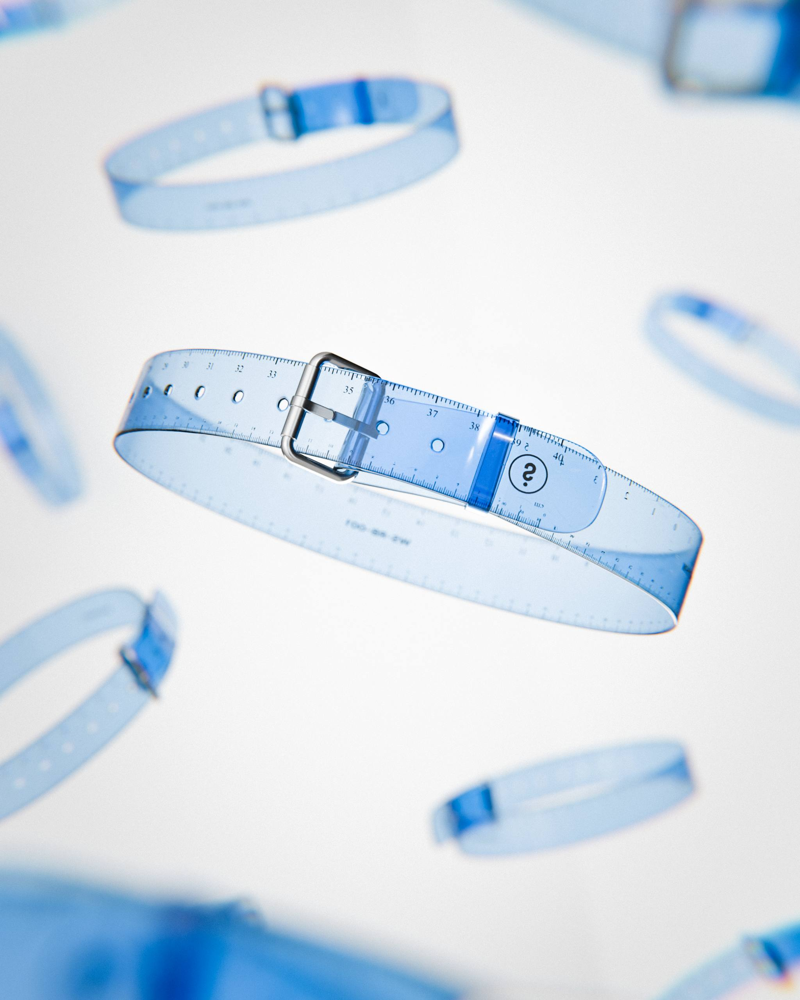
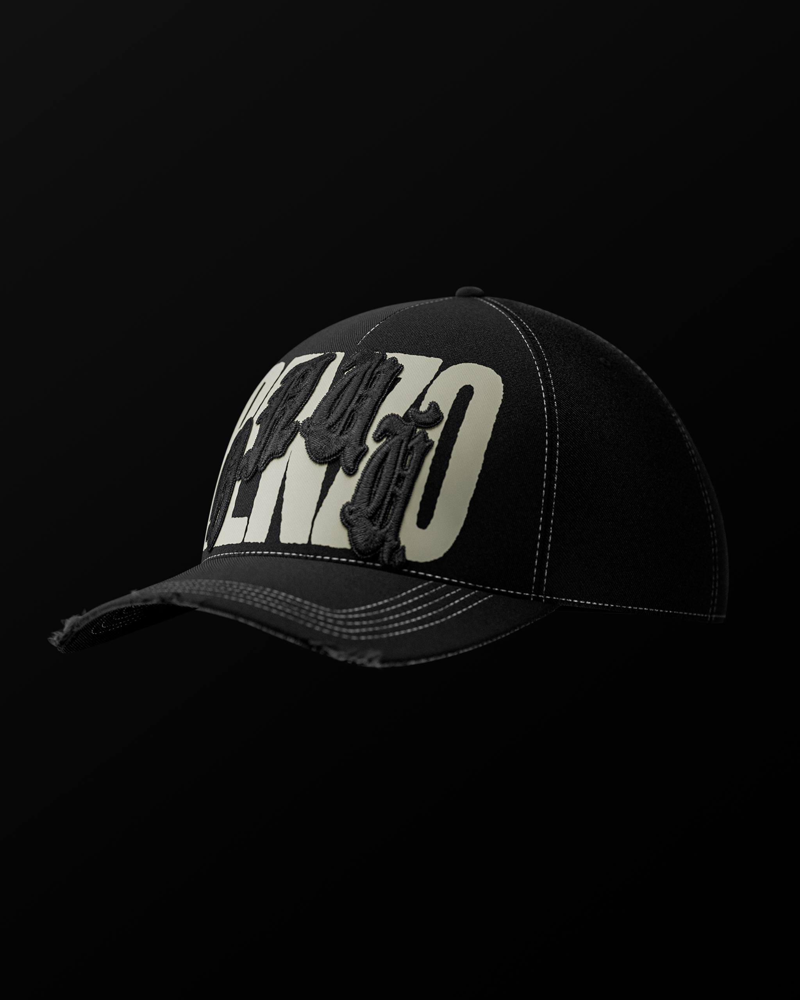
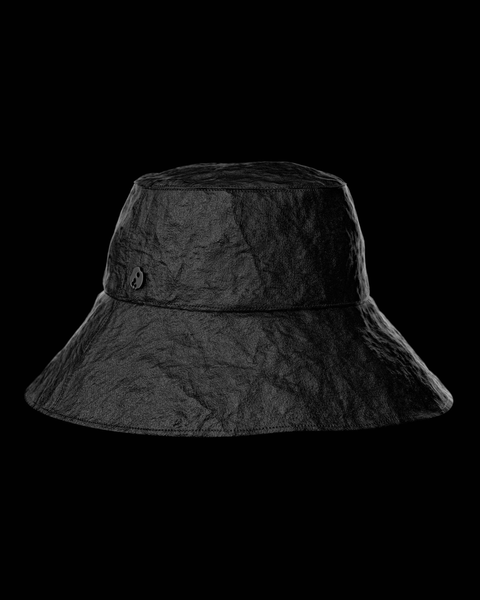
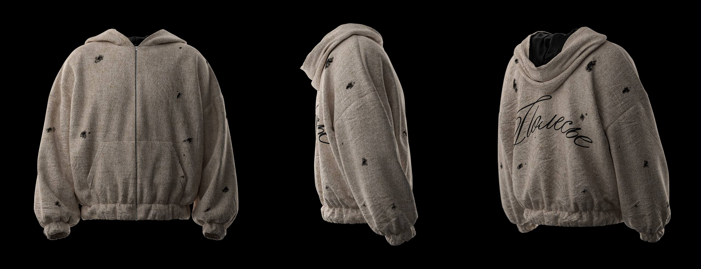

01
Креативная
концепция
Идея, визуальная система, референсы и сценарий, которые собирают проект до начала продакшена.
Обсудить задачу ↗NEGO PROD — концепты, CGI, дизайн и короткие видео для брендов, артистов и пространств.
Не продаю отдельный инструмент. Подбираю визуальный язык под идею, площадку и аудиторию.
Идея, визуальная система, референсы и сценарий, которые собирают проект до начала продакшена.
Обсудить задачу ↗Предметные визуалы, digital-fashion, невозможные продукты и изображения для кампаний.
Обсудить задачу ↗Ролики, тизеры и вертикальные форматы для Instagram, TikTok и рекламных размещений.
Обсудить задачу ↗От первой идеи до набора готовых материалов: key visual, видео и адаптации под площадки.
Обсудить задачу ↗Каждая работа может стать отдельным мини-лендингом: задача, идея, процесс и финальный результат.

Предметный концепт на границе аксессуара и измерительного инструмента. Чистый продуктовый визуал с сильным social-потенциалом.

02
03Без лишней бюрократии. На каждом этапе понятно, что происходит и какой результат мы фиксируем.
Задача, аудитория, площадки, сроки и желаемый эффект.
→ направлениеИдея, moodboard, визуальный язык и структура материалов.
→ презентацияCGI, съёмка, дизайн, motion и промежуточные согласования.
→ контентФинальные форматы, адаптации и аккуратная передача файлов.
→ запуск
Я собираю проекты на стыке дизайна, видео и CGI. Сам веду концепцию и арт-дирекшн, а под масштаб задачи подключаю нужных специалистов.
Блок готов для конкретных фактов: образование, студии, бренды и профессиональный путь.
Creative direction, CGI, 3D, motion, compositing, editing и визуальная упаковка кампаний.
Blender / Cinema 4D, After Effects, Premiere Pro, Photoshop, Figma и генеративные инструменты.
Самостоятельный продакшен, работа внутри команды или сбор проектной команды под задачу.
Выбери, что примерно нужно. Получится короткий бриф, который можно отправить одним сообщением.